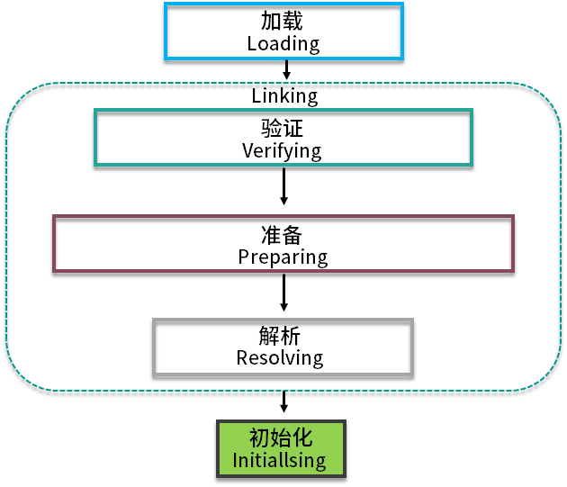
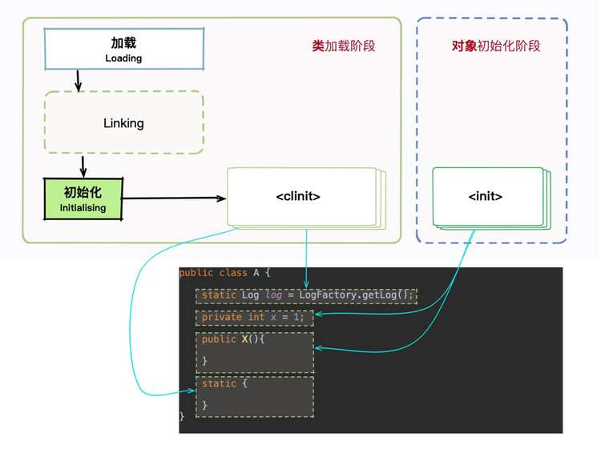
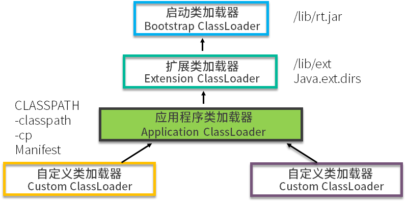
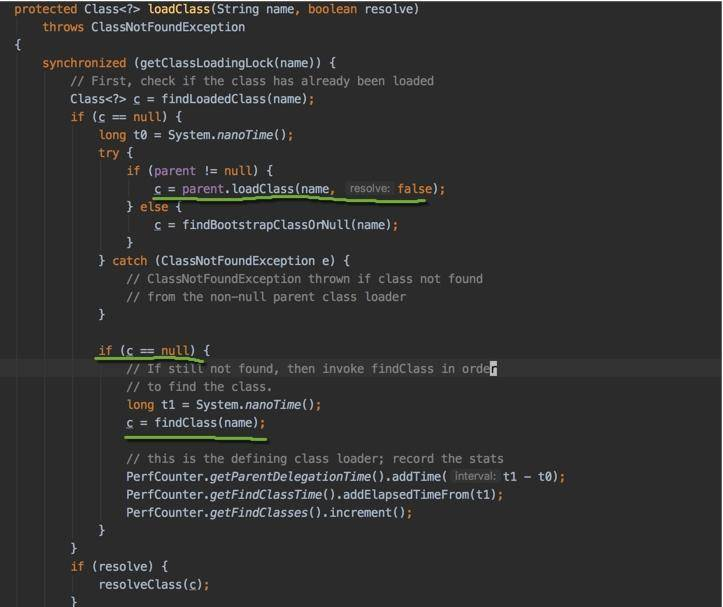
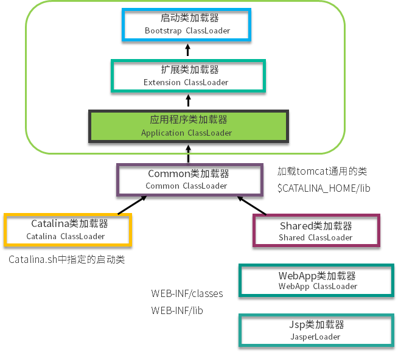
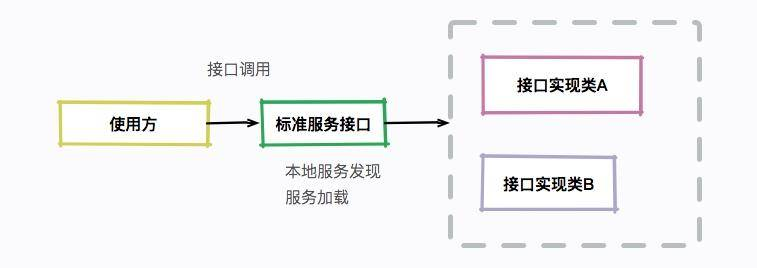

- 00 开篇词：JVM，一块难啃的骨头.md.html
- 01 一探究竟：为什么需要 JVM？它处在什么位置？.md.html
- 02 大厂面试题：你不得不掌握的 JVM 内存管理.md.html
- 03 大厂面试题：从覆盖 JDK 的类开始掌握类的加载机制.md.html
- 04 动手实践：从栈帧看字节码是如何在 JVM 中进行流转的.md.html
- 05 大厂面试题：得心应手应对 OOM 的疑难杂症.md.html
- 06 深入剖析：垃圾回收你真的了解吗？（上）.md.html
- 07 深入剖析：垃圾回收你真的了解吗？（下）.md.html
- 08 大厂面试题：有了 G1 还需要其他垃圾回收器吗？.md.html
- 09 案例实战：亿级流量高并发下如何进行估算和调优.md.html
- 10 第09讲：案例实战：面对突如其来的 GC 问题如何下手解决.md.html
- 11 第10讲：动手实践：自己模拟 JVM 内存溢出场景.md.html
- 12 第11讲：动手实践：遇到问题不要慌，轻松搞定内存泄漏.md.html
- 13 工具进阶：如何利用 MAT 找到问题发生的根本原因.md.html
- 14 动手实践：让面试官刮目相看的堆外内存排查.md.html
- 15 预警与解决：深入浅出 GC 监控与调优.md.html
- 16 案例分析：一个高死亡率的报表系统的优化之路.md.html
- 17 案例分析：分库分表后，我的应用崩溃了.md.html
- 18 动手实践：从字节码看方法调用的底层实现.md.html
- 19 大厂面试题：不要搞混 JMM 与 JVM.md.html
- 20 动手实践：从字节码看并发编程的底层实现.md.html
- 21 动手实践：不为人熟知的字节码指令.md.html
- 22 深入剖析：如何使用 Java Agent 技术对字节码进行修改.md.html
- 23 动手实践：JIT 参数配置如何影响程序运行？.md.html
- 24 案例分析：大型项目如何进行性能瓶颈调优？.md.html
- 25 未来：JVM 的历史与展望.md.html
- 26 福利：常见 JVM 面试题补充.md.html
03 大厂面试题：从覆盖 JDK 的类开始掌握类的加载机制
本课时我们主要从覆盖 JDK 的类开始讲解 JVM 的类加载机制。其实，JVM 的类加载机制和 Java 的类加载机制类似，但 JVM 的类加载过程稍有些复杂。
前面课时我们讲到，JVM 通过加载 .class 文件，能够将其中的字节码解析成操作系统机器码。那这些文件是怎么加载进来的呢？又有哪些约定？接下来我们就详细介绍 JVM 的类加载机制，同时介绍三个实际的应用场景。
我们首先看几个面试题。
- 我们能够通过一定的手段，覆盖 HashMap 类的实现么？
- 有哪些地方打破了 Java 的类加载机制？
- 如何加载一个远程的 .class 文件？怎样加密 .class 文件？
关于类加载，很多同学都知道双亲委派机制，但这明显不够。面试官可能要你讲出几个能打破这个机制的例子，这个时候不要慌。上面几个问题，是我在接触的一些比较高级的面试场景中，遇到的一些问法。在平常的工作中，也有大量的相关应用，我们会理论联系实践综合分析这些问题。
类加载过程
现实中并不是说，我把一个文件修改成 .class 后缀，就能够被 JVM 识别。类的加载过程非常复杂，主要有这几个过程：加载、验证、准备、解析、初始化。这些术语很多地方都出现过，我们不需要死记硬背，而应该要了解它背后的原理和要做的事情。

如图所示。大多数情况下，类会按照图中给出的顺序进行加载。下面我们就来分别介绍下这个过程。
加载
加载的主要作用是将外部的 .class 文件，加载到 Java 的方法区内，你可以回顾一下我们在上一课时讲的内存区域图。加载阶段主要是找到并加载类的二进制数据，比如从 jar 包里或者 war 包里找到它们。
验证
肯定不能任何 .class 文件都能加载，那样太不安全了，容易受到恶意代码的攻击。验证阶段在虚拟机整个类加载过程中占了很大一部分，不符合规范的将抛出 java.lang.VerifyError 错误。像一些低版本的 JVM，是无法加载一些高版本的类库的，就是在这个阶段完成的。
准备
从这部分开始，将为一些类变量分配内存，并将其初始化为默认值。此时，实例对象还没有分配内存，所以这些动作是在方法区上进行的。
我们顺便看一道面试题。下面两段代码，code-snippet 1 将会输出 0，而 code-snippet 2 将无法通过编译。
code-snippet 1：
public class A {
static int a ;
public static void main(String[] args) {
System.out.println(a);
}
}
code-snippet 2：
public class A {
public static void main(String[] args) {
int a ;
System.out.println(a);
}
}
为什么会有这种区别呢？
这是因为局部变量不像类变量那样存在准备阶段。类变量有两次赋初始值的过程，一次在准备阶段，赋予初始值（也可以是指定值）；另外一次在初始化阶段，赋予程序员定义的值。
因此，即使程序员没有为类变量赋值也没有关系，它仍然有一个默认的初始值。但局部变量就不一样了，如果没有给它赋初始值，是不能使用的。
解析
解析在类加载中是非常非常重要的一环，是将符号引用替换为直接引用的过程。这句话非常的拗口，其实理解起来也非常的简单。
符号引用是一种定义，可以是任何字面上的含义，而直接引用就是直接指向目标的指针、相对偏移量。
直接引用的对象都存在于内存中，你可以把通讯录里的女友手机号码，类比为符号引用，把面对面和你吃饭的人，类比为直接引用。
解析阶段负责把整个类激活，串成一个可以找到彼此的网，过程不可谓不重要。那这个阶段都做了哪些工作呢？大体可以分为：
- 类或接口的解析
- 类方法解析
- 接口方法解析
- 字段解析
我们来看几个经常发生的异常，就与这个阶段有关。
- java.lang.NoSuchFieldError 根据继承关系从下往上，找不到相关字段时的报错。
- java.lang.IllegalAccessError 字段或者方法，访问权限不具备时的错误。
- java.lang.NoSuchMethodError 找不到相关方法时的错误。
解析过程保证了相互引用的完整性，把继承与组合推进到运行时。
初始化
如果前面的流程一切顺利的话，接下来该初始化成员变量了，到了这一步，才真正开始执行一些字节码。
接下来是另一道面试题，你可以猜想一下，下面的代码，会输出什么？
public class A {
static int a = 0 ;
static {
a = 1;
b = 1;
}
static int b = 0;
public static void main(String[] args) {
System.out.println(a);
System.out.println(b);
}
}
结果是 1 0。a 和 b 唯一的区别就是它们的 static 代码块的位置。
这就引出一个规则：static 语句块，只能访问到定义在 static 语句块之前的变量。所以下面的代码是无法通过编译的。
static {
b = b + 1;
}
static int b = 0;
我们再来看第二个规则：JVM 会保证在子类的初始化方法执行之前，父类的初始化方法已经执行完毕。
所以，JVM 第一个被执行的类初始化方法一定是 java.lang.Object。另外，也意味着父类中定义的 static 语句块要优先于子类的。
与
说到这里，不得不再说一个面试题：
主要是为了让你弄明白类的初始化和对象的初始化之间的差别。
public class A {
static {
System.out.println("1");
}
public A(){
System.out.println("2");
}
}
public class B extends A {
static{
System.out.println("a");
}
public B(){
System.out.println("b");
}
public static void main(String[] args){
A ab = new B();
ab = new B();
}
}
先公布下答案：
1
a
2
b
2
b
你可以看下这张图。其中 static 字段和 static 代码块，是属于类的，在类的加载的初始化阶段就已经被执行。类信息会被存放在方法区，在同一个类加载器下，这些信息有一份就够了，所以上面的 static 代码块只会执行一次，它对应的是
而对象初始化就不一样了。通常，我们在 new 一个新对象的时候，都会调用它的构造方法，就是

所以，上面代码的 static 代码块只会执行一次，对象的构造方法执行两次。再加上继承关系的先后原则，不难分析出正确结果。
类加载器
整个类加载过程任务非常繁重，虽然这活儿很累，但总得有人干。类加载器做的就是上面 5 个步骤的事。
如果你在项目代码里，写一个 java.lang 的包，然后改写 String 类的一些行为，编译后，发现并不能生效。JRE 的类当然不能轻易被覆盖，否则会被别有用心的人利用，这就太危险了。
那类加载器是如何保证这个过程的安全性呢？其实，它是有着严格的等级制度的。
几个类加载器
首先，我们介绍几个不同等级的类加载器。
- Bootstrap ClassLoader
这是加载器中的大 Boss，任何类的加载行为，都要经它过问。它的作用是加载核心类库，也就是 rt.jar、resources.jar、charsets.jar 等。当然这些 jar 包的路径是可以指定的，-Xbootclasspath 参数可以完成指定操作。
这个加载器是 C++ 编写的，随着 JVM 启动。
- Extention ClassLoader
扩展类加载器，主要用于加载 lib/ext 目录下的 jar 包和 .class 文件。同样的，通过系统变量 java.ext.dirs 可以指定这个目录。
这个加载器是个 Java 类，继承自 URLClassLoader。
- App ClassLoader
这是我们写的 Java 类的默认加载器，有时候也叫作 System ClassLoader。一般用来加载 classpath 下的其他所有 jar 包和 .class 文件，我们写的代码，会首先尝试使用这个类加载器进行加载。
- Custom ClassLoader
自定义加载器，支持一些个性化的扩展功能。
双亲委派机制
关于双亲委派机制的问题面试中经常会被问到，你可能已经倒背如流了。
双亲委派机制的意思是除了顶层的启动类加载器以外，其余的类加载器，在加载之前，都会委派给它的父加载器进行加载。这样一层层向上传递，直到祖先们都无法胜任，它才会真正的加载。
打个比方。有一个家族，都是一些听话的孩子。孙子想要买一块棒棒糖，最终都要经过爷爷过问，如果力所能及，爷爷就直接帮孙子买了。
但你有没有想过，“类加载的双亲委派机制，双亲在哪里？明明都是单亲？”
我们还是用一张图来讲解。可以看到，除了启动类加载器，每一个加载器都有一个parent，并没有所谓的双亲。但是由于翻译的问题，这个叫法已经非常普遍了，一定要注意背后的差别。

我们可以翻阅 JDK 代码的 ClassLoader#loadClass 方法，来看一下具体的加载过程。和我们描述的一样，它首先使用 parent 尝试进行类加载，parent 失败后才轮到自己。同时，我们也注意到，这个方法是可以被覆盖的，也就是双亲委派机制并不一定生效。

这个模型的好处在于 Java 类有了一种优先级的层次划分关系。比如 Object 类，这个毫无疑问应该交给最上层的加载器进行加载，即使是你覆盖了它，最终也是由系统默认的加载器进行加载的。
如果没有双亲委派模型，就会出现很多个不同的 Object 类，应用程序会一片混乱。
一些自定义加载器
下面我们就来聊一聊可以打破双亲委派机制的一些案例。为了支持一些自定义加载类多功能的需求，Java 设计者其实已经作出了一些妥协。
案例一：tomcat
tomcat 通过 war 包进行应用的发布，它其实是违反了双亲委派机制原则的。简单看一下 tomcat 类加载器的层次结构。 
对于一些需要加载的非基础类，会由一个叫作 WebAppClassLoader 的类加载器优先加载。等它加载不到的时候，再交给上层的 ClassLoader 进行加载。这个加载器用来隔绝不同应用的 .class 文件，比如你的两个应用，可能会依赖同一个第三方的不同版本，它们是相互没有影响的。
如何在同一个 JVM 里，运行着不兼容的两个版本，当然是需要自定义加载器才能完成的事。
那么 tomcat 是怎么打破双亲委派机制的呢？可以看图中的 WebAppClassLoader，它加载自己目录下的 .class 文件，并不会传递给父类的加载器。但是，它却可以使用 SharedClassLoader 所加载的类，实现了共享和分离的功能。
但是你自己写一个 ArrayList，放在应用目录里，tomcat 依然不会加载。它只是自定义的加载器顺序不同，但对于顶层来说，还是一样的。
案例二：SPI
Java 中有一个 SPI 机制，全称是 Service Provider Interface，是 Java 提供的一套用来被第三方实现或者扩展的 API，它可以用来启用框架扩展和替换组件。
这个说法可能比较晦涩，但是拿我们常用的数据库驱动加载来说，就比较好理解了。在使用 JDBC 写程序之前，通常会调用下面这行代码，用于加载所需要的驱动类。
Class.forName("com.mysql.jdbc.Driver")
这只是一种初始化模式，通过 static 代码块显式地声明了驱动对象，然后把这些信息，保存到底层的一个 List 中。这种方式我们不做过多的介绍，因为这明显就是一个接口编程的思路，没什么好奇怪的。
但是你会发现，即使删除了 Class.forName 这一行代码，也能加载到正确的驱动类，什么都不需要做，非常的神奇，它是怎么做到的呢？
我们翻开 MySQL 的驱动代码，发现了一个奇怪的文件。之所以能够发生这样神奇的事情，就是在这里实现的。
路径：
mysql-connector-java-8.0.15.jar!/META-INF/services/java.sql.Driver
里面的内容是：
com.mysql.cj.jdbc.Driver
通过在 META-INF/services 目录下，创建一个以接口全限定名为命名的文件（内容为实现类的全限定名），即可自动加载这一种实现，这就是 SPI。
SPI 实际上是“基于接口的编程＋策略模式＋配置文件”组合实现的动态加载机制，主要使用 java.util.ServiceLoader 类进行动态装载。

这种方式，同样打破了双亲委派的机制。
DriverManager 类和 ServiceLoader 类都是属于 rt.jar 的。它们的类加载器是 Bootstrap ClassLoader，也就是最上层的那个。而具体的数据库驱动，却属于业务代码，这个启动类加载器是无法加载的。这就比较尴尬了，虽然凡事都要祖先过问，但祖先没有能力去做这件事情，怎么办？
我们可以一步步跟踪代码，来看一下这个过程。
//part1:DriverManager::loadInitialDrivers
//jdk1.8 之后，变成了lazy的ensureDriversInitialized
...
ServiceLoader <Driver> loadedDrivers = ServiceLoader.load(Driver.class);
Iterator<Driver> driversIterator = loadedDrivers.iterator();
...
//part2:ServiceLoader::load
public static <T> ServiceLoader<T> load(Class<T> service) {
ClassLoader cl = Thread.currentThread().getContextClassLoader();
return ServiceLoader.load(service, cl);
}
通过代码你可以发现 Java 玩了个魔术，它把当前的类加载器，设置成了线程的上下文类加载器。那么，对于一个刚刚启动的应用程序来说，它当前的加载器是谁呢？也就是说，启动 main 方法的那个加载器，到底是哪一个？
所以我们继续跟踪代码。找到 Launcher 类，就是 jre 中用于启动入口函数 main 的类。我们在 Launcher 中找到以下代码。
public Launcher() {
Launcher.ExtClassLoader var1;
try {
var1 = Launcher.ExtClassLoader.getExtClassLoader();
} catch (IOException var10) {
throw new InternalError("Could not create extension class loader", var10);
}
try {
this.loader = Launcher.AppClassLoader.getAppClassLoader(var1);
} catch (IOException var9) {
throw new InternalError("Could not create application class loader", var9);
}
Thread.currentThread().setContextClassLoader(this.loader);
...
}
到此为止，事情就比较明朗了，当前线程上下文的类加载器，是应用程序类加载器。使用它来加载第三方驱动，是没有什么问题的。
我们之所以花大量的篇幅来介绍这个过程，第一，可以让你更好的看到一个打破规则的案例。第二，这个问题面试时出现的几率也是比较高的，你需要好好理解。
案例三：OSGi
OSGi 曾经非常流行，Eclipse 就使用 OSGi 作为插件系统的基础。OSGi 是服务平台的规范，旨在用于需要长运行时间、动态更新和对运行环境破坏最小的系统。
OSGi 规范定义了很多关于包生命周期，以及基础架构和绑定包的交互方式。这些规则，通过使用特殊 Java 类加载器来强制执行，比较霸道。
比如，在一般 Java 应用程序中，classpath 中的所有类都对所有其他类可见，这是毋庸置疑的。但是，OSGi 类加载器基于 OSGi 规范和每个绑定包的 manifest.mf 文件中指定的选项，来限制这些类的交互，这就让编程风格变得非常的怪异。但我们不难想象，这种与直觉相违背的加载方式，肯定是由专用的类加载器来实现的。
随着 jigsaw 的发展（旨在为 Java SE 平台设计、实现一个标准的模块系统），我个人认为，现在的 OSGi，意义已经不是很大了。OSGi 是一个庞大的话题，你只需要知道，有这么一个复杂的东西，实现了模块化，每个模块可以独立安装、启动、停止、卸载，就可以了。
不过，如果你有机会接触相关方面的工作，也许会不由的发出感叹：原来 Java 的类加载器，可以玩出这么多花样。
如何替换 JDK 的类
让我们回到本课时开始的问题，如何替换 JDK 中的类？比如，我们现在就拿 HashMap为例。
当 Java 的原生 API 不能满足需求时，比如我们要修改 HashMap 类，就必须要使用到 Java 的 endorsed 技术。我们需要将自己的 HashMap 类，打包成一个 jar 包，然后放到 -Djava.endorsed.dirs 指定的目录中。注意类名和包名，应该和 JDK 自带的是一样的。但是，java.lang 包下面的类除外，因为这些都是特殊保护的。
因为我们上面提到的双亲委派机制，是无法直接在应用中替换 JDK 的原生类的。但是，有时候又不得不进行一下增强、替换，比如你想要调试一段代码，或者比 Java 团队早发现了一个 Bug。所以，Java 提供了 endorsed 技术，用于替换这些类。这个目录下的 jar 包，会比 rt.jar 中的文件，优先级更高，可以被最先加载到。
小结
通过本课时的学习我们可以了解到，一个 Java 类的加载，经过了加载、验证、准备、解析、初始化几个过程，每一个过程都划清了各自负责的事情。
接下来，我们了解到 Java 自带的三个类加载器。同时了解到，main 方法的线程上下文加载器，其实是 Application ClassLoader。
一般情况下，类加载是遵循双亲委派机制的。我们也认识到，这个双亲，很有问题。通过 3 个案例的学习和介绍，可以看到有很多打破这个规则的情况。类加载器通过开放的 API，让加载过程更加灵活。
Java 的类加载器是非常重要的知识点，也是面试常考的知识点，本课时提供了多个面试题，你可以实际操作体验一下。